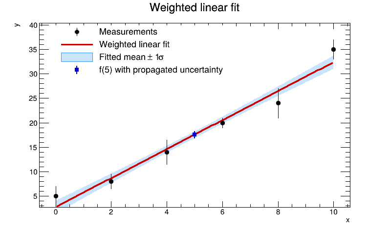
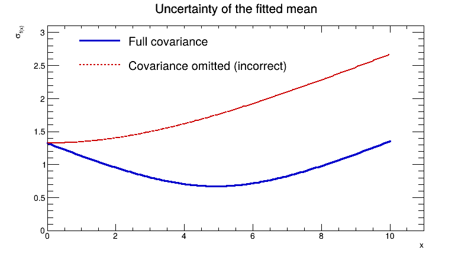

加权拟合与拟合结果的误差传播
目录
一组测量值的精度不同，怎样拟合一条直线？得到截距和斜率后，怎样计算指定位置的拟合值及其误差？以下用六个测量点，按 测量误差 → weighted least squares → 参数协方差 → 拟合值误差带 的顺序完成计算。相关方法见 ROOT Fit 教程。
运行方法： 下载完整运行包，打开 linearfit_error band.ipynb，选择 PyROOT kernel 并按顺序运行；或执行 root -l -b -q Weighted_Fit_Uncertainty.C。网页可切换 PyROOT / ROOT C++。
1. 为什么使用加权拟合
拟合模型为 $f(x)=a+bx$。本例将给定的 $\sigma_i$ 作为已知的、彼此独立的 $y_i$ 测量标准差，$x_i$ 的误差可忽略。不同测量点的误差大小不同，因此对拟合的约束也不同。
| $x_i$ | 0 | 2 | 4 | 6 | 8 | 10 |
|---|---|---|---|---|---|---|
| $y_i$ | 5 | 8 | 14 | 20 | 24 | 35 |
| $\sigma_i$ | 2 | 1.5 | 2.5 | 1 | 3 | 2 |
若每个 $y_i$ 围绕 $f(x_i)$ 按 Gaussian 分布涨落，likelihood 为
$$L(a,b)=\prod_i\frac{1}{\sqrt{2\pi}\sigma_i} \exp\!\left[-\frac{(y_i-a-bx_i)^2}{2\sigma_i^2}\right].$$
取对数后，$-2\ln L=\chi^2+\mathrm{const}$，因此最大化这个 Gaussian likelihood 等价于最小化
$$\chi^2(a,b)=\sum_i w_i[y_i-a-bx_i]^2,\qquad w_i=\frac{1}{\sigma_i^2}.$$
例如，$x=6$ 处 $\sigma=1$，而 $x=8$ 处 $\sigma=3$；两点对同样大小残差的权重相差 9 倍。误差条应来自测量的不确定度，不能为了让直线更贴近某一点而调整权重。
2. 用 TGraphErrors 拟合，并读取完整结果
TGraphErrors 将 $x,y,\sigma_x,\sigma_y$ 一起传给 ROOT。这里 ex=0，拟合直接采用 ey。S 保存结果和协方差，Q 减少输出，0 关闭自动绘图；不要加 W，因为它会忽略测量点的误差。
import ROOT
import math
from array import array
from IPython.display import display, Image
ROOT.gROOT.SetBatch(True)
ROOT.gStyle.SetOptStat(0)
ROOT.gStyle.SetOptFit(0)
ROOT.gStyle.SetEndErrorSize(0)
ROOT.gStyle.SetErrorX(0)
ROOT.gStyle.SetPadTickX(1)
ROOT.gStyle.SetPadTickY(1)
ROOT.gErrorIgnoreLevel = ROOT.kWarning
ROOT.gSystem.mkdir("fit_figures", True)
x = array("d", [0, 2, 4, 6, 8, 10])
y = array("d", [5, 8, 14, 20, 24, 35])
ex = array("d", [0]*len(x))
ey = array("d", [2, 1.5, 2.5, 1, 3, 2])
graph = ROOT.TGraphErrors(len(x), x, y, ex, ey)
graph.SetTitle("Weighted linear fit;x;y")
graph.SetMarkerStyle(20)
graph.SetMarkerColor(ROOT.kBlack)
graph.SetLineColor(ROOT.kBlack)
line = ROOT.TF1("weighted_line", "pol1", 0, 10)
line.SetParNames("a", "b")
result = graph.Fit(line, "QS0")
C = result.GetCovarianceMatrix()
print(f"status = {int(result)}; covariance status = {result.CovMatrixStatus()}")
print(f"a = {line.GetParameter(0):.6f} +/- {line.GetParError(0):.6f}")
print(f"b = {line.GetParameter(1):.6f} +/- {line.GetParError(1):.6f}")
print(f"chi2 = {result.Chi2():.6f}; ndf = {result.Ndf()}; p = {result.Prob():.6f}")
print("C =")
for i in range(2):
print(f" {C[i][0]:.6f} {C[i][1]:.6f}")
print(f"corr(a,b) = {result.Correlation(0,1):.6f}")gROOT->SetBatch(true);
gStyle->SetOptStat(0); gStyle->SetOptFit(0);
gStyle->SetEndErrorSize(0); gStyle->SetErrorX(0);
gStyle->SetPadTickX(1); gStyle->SetPadTickY(1);
gErrorIgnoreLevel=kWarning; gSystem->mkdir("fit_figures",true);
std::cout << std::fixed << std::setprecision(6);
double x[]={0,2,4,6,8,10}, y[]={5,8,14,20,24,35};
double ex[]={0,0,0,0,0,0}, ey[]={2,1.5,2.5,1,3,2};
auto graph=new TGraphErrors(6,x,y,ex,ey);
graph->SetTitle("Weighted linear fit;x;y");
graph->SetMarkerStyle(20); graph->SetMarkerColor(kBlack); graph->SetLineColor(kBlack);
auto line=new TF1("weighted_line","pol1",0,10); line->SetParNames("a","b");
auto result=graph->Fit(line,"QS0");
TMatrixDSym C=result->GetCovarianceMatrix();
std::cout << "status = " << int(result) << "; covariance status = " << result->CovMatrixStatus() << "\n";
std::cout << "a = " << line->GetParameter(0) << " +/- " << line->GetParError(0) << "\n";
std::cout << "b = " << line->GetParameter(1) << " +/- " << line->GetParError(1) << "\n";
std::cout << "chi2 = " << result->Chi2() << "; ndf = " << result->Ndf() << "; p = " << result->Prob() << "\nC =\n";
for (int i=0;i<2;++i) std::cout << " " << C(i,0) << " " << C(i,1) << "\n";
std::cout << "corr(a,b) = " << result->Correlation(0,1) << "\n";status = 0; covariance status = 3 a = 2.728511 +/- 1.324199 b = 2.969199 +/- 0.231568 chi2 = 4.189820; ndf = 4; p = 0.380926 C = 1.753503 -0.264246 -0.264246 0.053624 corr(a,b) = -0.861742
status=0 表示拟合成功；协方差状态 3 表示 ROOT 得到了准确的协方差矩阵。这里自由度为 $6-2=4$。在本例已知 Gaussian 测量误差的假设下，可以用打印的 $\chi^2$ 和 $p$ 检查数据与直线模型是否相容；它们不决定测量误差应该改成多大。
协方差矩阵按参数顺序 $(a,b)$ 排列：
$$C=\begin{pmatrix}\sigma_a^2&\operatorname{Cov}(a,b)\\ \operatorname{Cov}(a,b)&\sigma_b^2\end{pmatrix},\qquad \rho_{ab}=\frac{C_{ab}}{\sqrt{C_{aa}C_{bb}}}.$$
本例 $a,b$ 明显反相关：在数据覆盖的范围内，略微抬高截距可以由减小斜率部分抵消。所以计算直线上一个点的误差时，不能把两个参数当成独立量。
3. 在 x = 5 处逐项计算误差
拟合值为 $g=a+bx_0$。参数发生微小变化时，$\delta g=\delta a+x_0\delta b$；将其平方并取平均，就得到
$$\sigma_g^2=C_{aa}+2x_0C_{ab}+x_0^2C_{bb}.$$
这里第三项使用的是斜率方差，第二项来自两参数的相关性。下面先打印三项，再求平方根，便于和公式逐项核对。
x0 = 5.0
terms = [C[0][0], 2*x0*C[0][1], x0*x0*C[1][1]]
variance = sum(terms)
fx0 = line.Eval(x0)
sigma_fx0 = math.sqrt(variance)
print(f"Variance terms: {terms[0]:.6f} {terms[1]:+.6f} {terms[2]:+.6f}")
print(f"Variance sum = {variance:.6f}")
print(f"f(5) = {fx0:.6f} +/- {sigma_fx0:.6f}")
diagonal_only = math.sqrt(terms[0]+terms[2])
print(f"If covariance is omitted: sigma = {diagonal_only:.6f}")double x0=5.0;
double terms[]={C(0,0),2*x0*C(0,1),x0*x0*C(1,1)};
double variance=terms[0]+terms[1]+terms[2];
double fx0=line->Eval(x0), sigma_fx0=std::sqrt(variance);
std::cout << "Variance terms: " << terms[0] << " " << terms[1] << " " << terms[2] << "\n";
std::cout << "Variance sum = " << variance << "\n";
std::cout << "f(5) = " << fx0 << " +/- " << sigma_fx0 << "\n";
double diagonal_only=std::sqrt(terms[0]+terms[2]);
std::cout << "If covariance is omitted: sigma = " << diagonal_only << "\n";Variance terms: 1.753503 -2.642463 +1.340594 Variance sum = 0.451634 f(5) = 17.574506 +/- 0.672037 If covariance is omitted: sigma = 1.759005
结果为 $f(5)=17.5745\pm0.6720$。若丢掉协方差项，会误算为约 1.7590。上式对本例的直线是精确的线性传播；一般非线性函数则使用其在最佳拟合点的一阶展开：
$$\sigma_g^2=\sum_{j,k}\frac{\partial g}{\partial\theta_j} C_{jk}\frac{\partial g}{\partial\theta_k}.$$
4. 把同一计算推广到整条误差带
在一系列 $x$ 上重复上一节的计算，就得到拟合均值的 $\pm1\sigma$ 带。已知独立 Gaussian 误差、直线模型成立时，这对应每个固定 $x$ 处约 68.27% 的区间。它不表示有 68.27% 的数据点应该落在带内，也不是整条曲线同时被覆盖的概率。
band = ROOT.TGraphErrors(201)
for i in range(201):
xx = i/20.0
vv = C[0][0]+2*xx*C[0][1]+xx*xx*C[1][1]
band.SetPoint(i, xx, line.Eval(xx))
band.SetPointError(i, 0, math.sqrt(vv))
band.SetFillColorAlpha(ROOT.kAzure+1, 0.25)
band.SetLineColor(ROOT.kAzure+1)
line.SetLineColor(ROOT.kRed+1)
line.SetLineWidth(3)
point = ROOT.TGraphErrors(1)
point.SetPoint(0, x0, fx0)
point.SetPointError(0, 0, sigma_fx0)
point.SetMarkerStyle(21)
point.SetMarkerColor(ROOT.kBlue+1)
point.SetLineColor(ROOT.kBlue+1)
point.SetLineWidth(2)
c = ROOT.TCanvas("c_weighted_band", "Weighted fit and mean uncertainty", 800, 500)
graph.Draw("AP")
graph.GetXaxis().SetLimits(-0.6, 10.6)
band.Draw("3 same")
line.Draw("same")
graph.Draw("P same")
point.Draw("P same")
legend = ROOT.TLegend(0.14, 0.67, 0.60, 0.89)
legend.SetBorderSize(0)
legend.AddEntry(graph, "Measurements", "pe")
legend.AddEntry(line, "Weighted linear fit", "l")
legend.AddEntry(band, "Fitted mean #pm 1#sigma", "f")
legend.AddEntry(point, "f(5) with propagated uncertainty", "pe")
legend.Draw()
c.SaveAs("fit_figures/weighted-topic-mean-band.png")
display(Image(filename="fit_figures/weighted-topic-mean-band.png"))auto band=new TGraphErrors(201);
for(int i=0;i<=200;++i) {
double xx=i/20.0, vv=C(0,0)+2*xx*C(0,1)+xx*xx*C(1,1);
band->SetPoint(i,xx,line->Eval(xx)); band->SetPointError(i,0,std::sqrt(vv));
}
band->SetFillColorAlpha(kAzure+1,0.25); band->SetLineColor(kAzure+1);
line->SetLineColor(kRed+1); line->SetLineWidth(3);
auto point=new TGraphErrors(1); point->SetPoint(0,x0,fx0); point->SetPointError(0,0,sigma_fx0);
point->SetMarkerStyle(21); point->SetMarkerColor(kBlue+1); point->SetLineColor(kBlue+1); point->SetLineWidth(2);
auto c=new TCanvas("c_weighted_band","Weighted fit and mean uncertainty",800,500);
graph->Draw("AP"); graph->GetXaxis()->SetLimits(-0.6,10.6); band->Draw("3 same"); line->Draw("same"); graph->Draw("P same"); point->Draw("P same");
auto legend=new TLegend(0.14,0.67,0.60,0.89); legend->SetBorderSize(0);
legend->AddEntry(graph,"Measurements","pe"); legend->AddEntry(line,"Weighted linear fit","l");
legend->AddEntry(band,"Fitted mean #pm 1#sigma","f");
legend->AddEntry(point,"f(5) with propagated uncertainty","pe"); legend->Draw();
c->SaveAs("fit_figures/weighted-topic-mean-band.png");
误差带在数据约束最强的位置附近最窄。下图把正确的带宽和遗漏协方差的计算直接比较；后者甚至无法反映这一特征。
full_error = ROOT.TGraph()
no_covariance = ROOT.TGraph()
for i in range(201):
xx = i/20.0
full_error.SetPoint(i, xx, math.sqrt(C[0][0]+2*xx*C[0][1]+xx*xx*C[1][1]))
no_covariance.SetPoint(i, xx, math.sqrt(C[0][0]+xx*xx*C[1][1]))
full_error.SetTitle("Uncertainty of the fitted mean;x;#sigma_{f(x)}")
full_error.SetLineColor(ROOT.kBlue+1)
full_error.SetLineWidth(3)
full_error.SetMinimum(0)
full_error.SetMaximum(3.1)
no_covariance.SetLineColor(ROOT.kRed+1)
no_covariance.SetLineWidth(2)
no_covariance.SetLineStyle(2)
c = ROOT.TCanvas("c_covariance_effect", "Covariance contribution", 800, 460)
full_error.Draw("AL")
no_covariance.Draw("L same")
legend_cov = ROOT.TLegend(0.15, 0.70, 0.64, 0.89)
legend_cov.SetBorderSize(0)
legend_cov.AddEntry(full_error, "Full covariance", "l")
legend_cov.AddEntry(no_covariance, "Covariance omitted (incorrect)", "l")
legend_cov.Draw()
c.SaveAs("fit_figures/weighted-topic-covariance.png")
display(Image(filename="fit_figures/weighted-topic-covariance.png"))auto full_error=new TGraph(), no_covariance=new TGraph();
for(int i=0;i<=200;++i) {
double xx=i/20.0;
full_error->SetPoint(i,xx,std::sqrt(C(0,0)+2*xx*C(0,1)+xx*xx*C(1,1)));
no_covariance->SetPoint(i,xx,std::sqrt(C(0,0)+xx*xx*C(1,1)));
}
full_error->SetTitle("Uncertainty of the fitted mean;x;#sigma_{f(x)}");
full_error->SetLineColor(kBlue+1); full_error->SetLineWidth(3); full_error->SetMinimum(0); full_error->SetMaximum(3.1);
no_covariance->SetLineColor(kRed+1); no_covariance->SetLineWidth(2); no_covariance->SetLineStyle(2);
c=new TCanvas("c_covariance_effect","Covariance contribution",800,460);
full_error->Draw("AL"); no_covariance->Draw("L same");
auto legend_cov=new TLegend(0.15,0.70,0.64,0.89); legend_cov->SetBorderSize(0);
legend_cov->AddEntry(full_error,"Full covariance","l");
legend_cov->AddEntry(no_covariance,"Covariance omitted (incorrect)","l"); legend_cov->Draw();
c->SaveAs("fit_figures/weighted-topic-covariance.png");
4.1 使用 ROOT 的区间计算接口核对
也可以从保存的 TFitResult 调用 GetConfidenceIntervals。一维坐标的两个 stride 参数都取 1；返回的是区间的半宽。明确设定 cl=0.682689492137 和 norm=False，就与本例直接传播得到的 $1\sigma$ 一致。
coordinates = array("d", [x0])
ci = array("d", [0.0])
cl = 0.682689492137
result.GetConfidenceIntervals(1, 1, 1, coordinates, ci, cl, False)
print(f"ROOT interval half-width = {ci[0]:.6f}")
print(f"Direct covariance error = {sigma_fx0:.6f}")double coordinates[]={x0}, ci[]={0.0}, cl=0.682689492137;
result->GetConfidenceIntervals(1,1,1,coordinates,ci,cl,false);
std::cout << "ROOT interval half-width = " << ci[0] << "\n";
std::cout << "Direct covariance error = " << sigma_fx0 << "\n";ROOT interval half-width = 0.672037 Direct covariance error = 0.672037
这里给定的 $\sigma_i$ 已经是测量标准差，因此不再按 $\chi^2/\mathrm{ndf}$ 缩放区间。若把置信水平写为 0.68，得到的是略小的 68% 区间半宽，不能要求它与精确的 $1\sigma$ 数值完全相同。
5. 拟合均值与下一次测量
在 $x_0$ 处拟合均值的不确定度为 $\sigma_f$。若再做一次独立测量，其自身标准差为 $\sigma_{\rm new}$，预测新测量值还要包含这次测量的涨落：
$$\sigma_{\rm pred}^2=\sigma_f^2+\sigma_{\rm new}^2.$$
例如在 $x=5$ 再做一次标准差为 2 的独立测量，预测标准差约为 2.110，而拟合均值的标准差仍为 0.672。两者回答不同的问题，画图时应标明带的含义。
6. Guideline
- 把测量值和测量标准差一起存入
TGraphErrors；只有 $y$ 误差时将ex设为零，使用Fit(...,"S")保存完整结果。 - 从同一个拟合结果取参数和完整协方差，用 $J C J^T$ 传播到所需量。保留参数的顺序，不能仅把各参数误差独立平方相加。
- 已知测量标准差时，不为了使 $\chi^2/\mathrm{ndf}=1$ 而自动缩放误差。若拟合明显不相容，检查模型、单位、误差来源和数据间的相关性。
- 若 $x$ 的误差不可忽略，要提供相应的
ex；若测量点共享相关误差，普通独立误差条不包含这些相关性，应使用数据协方差矩阵构造 $\chi^2=\boldsymbol r^T V^{-1}\boldsymbol r$。 - 对少计数 histogram，先看 Poisson likelihood 与 least squares 的比较；不要把本页的已知 Gaussian 测量误差直接替换成稀疏计数的 $\sqrt n$。